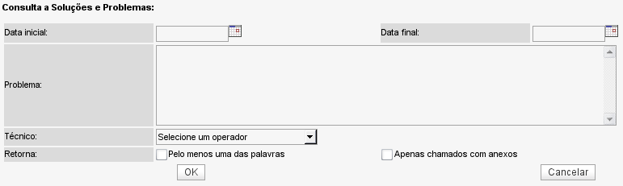

Consulta por Soluções (Ocorrências -> Soluções)
No OcoMon é possível realizar pesquisas por soluções adotadas para resoluções de chamados. A busca trará ocorrências que se enquadrem dentro dos critérios de pesquisa buscando estas informações diretamente da descrição da solução adotada, assentamentos e descrição dos chamados encerrados no sistema.

Tela de consulta de soluções - versão 2.0rc3
Campos de consulta:
Data inicial: ao definir uma data de início, a busca será limitada a chamados abertos a partir da data informada.
Data final: ao definir uma data de fim, a busca será limitada a chamados encerrados até a data informada.
Problema: nesse campo deve ser digitada(s) a(s) palavra(s)-chave para a busca não importando a ordem em que aparecem no texto. Considerando a complexidade da busca, a mesma será mais demorada de acordo com a quantidade de palavras-chave informadas.
Técnico: ao ser selecionado um técnico específo, a busca será limitada apenas à chamados/ocorrências encerradas pelo técnico selecionado.
Retorna pelo menos uma das palavras: ao marcar essa opção, o sistema retornará resultados onde pelo menos uma das palavras-chave apareça. Por padrão, o sistema retorna chamados onde todas as palavras-chave existam.
Apenas chamados com anexos: ao marcar essa opção, a busca será limitada a chamados que possuam arquivos em anexo.
Exemplo de retorno de uma busca por soluções - versão 2.0rc3
A tela à cima exibe o retorno de uma consulta por 3 palavras-chave. As palavras-chave são exibidas em destaque. Para ter acesso aos detalhes de cada ocorrência basta clicar no número da mesma.